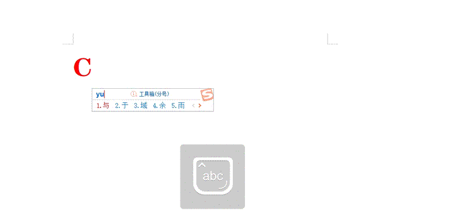

Pillow生成GIF动态图
GIF（Graphics Interchange Format，图形交换格式）是一种“位图”图像格式，它以
与其他格式的图片相比，GIF 还有一项非常重要的应用，那就是生成动态图。我们知道，Pillow 能够处理多种图像格式，包括 GIF 格式，它可以将静态格式图片（png、jpg）合成为 GIF 动态图。
.gif作为图像的扩展名。GIF 图片非常适合在互联网中使用，这是因为它采用了图像预压缩技术，该技术的应用，在一定程度上减少了图像传播、加载所消耗的时间。与其他格式的图片相比，GIF 还有一项非常重要的应用，那就是生成动态图。我们知道，Pillow 能够处理多种图像格式，包括 GIF 格式，它可以将静态格式图片（png、jpg）合成为 GIF 动态图。
注意：Pillow 总是以灰度模式（L）或调色板模式（P）来读取 GIF 文件。
下面看一组示例：如何使用 Pillow 生成 GiF 动态图。（示例中所用图片素材，点击链接下载，提取码：n1v2）
import os
import random
from PIL import Image
def png_to_gif(png_path,gif_name):
"""png合成gif图像"""
frames = []
# 返回文件夹内的所有静态图的列表
png_files = os.listdir(png_path)
# 打印返回的列表
print(png_files)
# 读取文件内的静态图
for frame_id in range(1,len(png_files)+1):
frame = Image.open(os.path.join(png_path,'image%d.png'%frame_id))
frames.append(frame)
# 以第一张图片作为开始，将后续5张图片合并成 gif 动态图
# 参数说明：
# save_all 保存图像;transparency 设置透明背景色;duration 单位毫秒，动画持续时间，
# loop=0 无限循环;disposal=2 恢复原背景颜色。参数详细说明，请参阅官方文档，网址见文章末尾处。
frames[0].save(gif_name,save_all=True,append_images=frames[1:],transparency=0,duration=2000,loop=0,disposal=2)
#调用函数，传入对应的参数
png_to_gif("C:/Users/Administrator/Desktop/image",'C:/Users/Administrator/Desktop/t.gif')
动态效果图，如下所示：

想要了解关于 Pillow 的更多的知识，请参考官方文档：点击前往关注公众号「站长严长生」，在手机上阅读所有教程，随时随地都能学习。内含一款搜索神器，免费下载全网书籍和视频。

微信扫码关注公众号